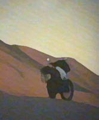

michele ungaro
Nasce a Venezia, nel 1963.
Geologo di professione, viaggia molto,
Africa, Asia, America, Francia.
La sua passione è comunque per la fotografia.
Ha pubblicato un book fotografico,
wep.
world experience photography